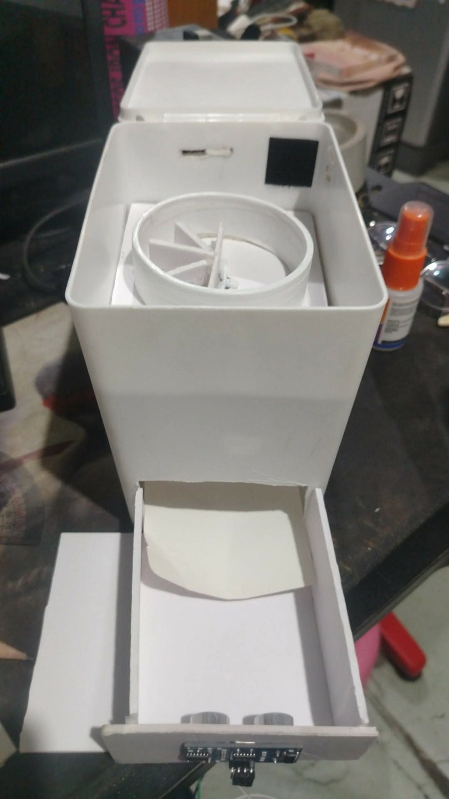
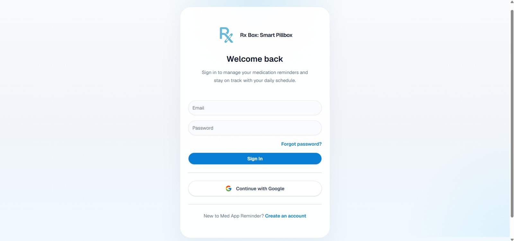
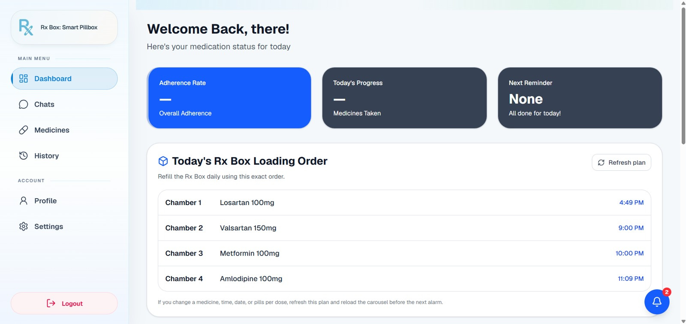
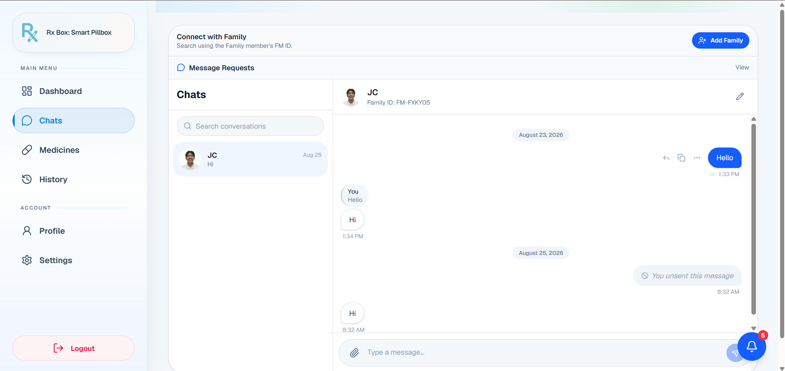
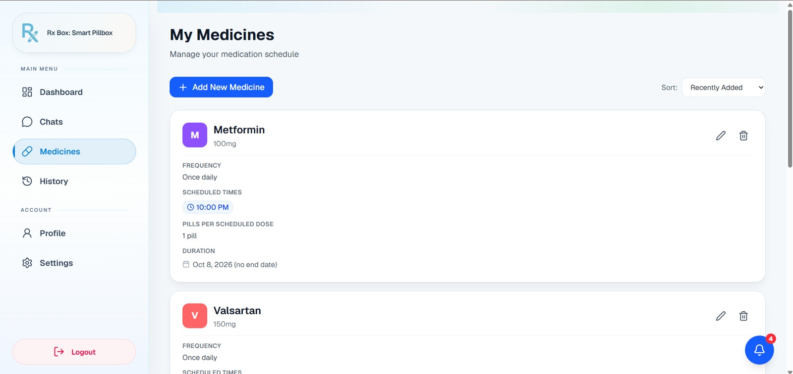
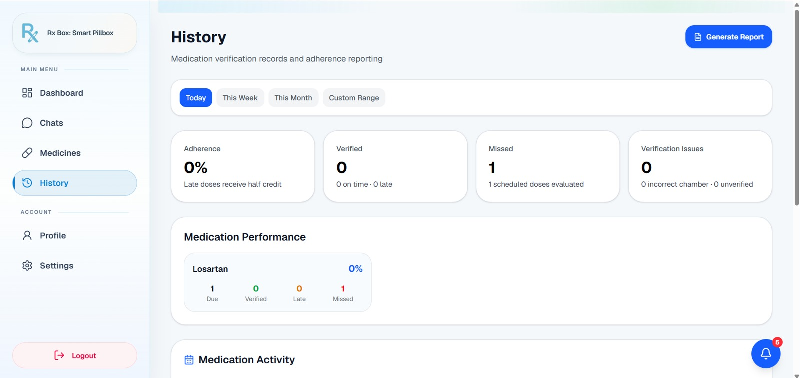
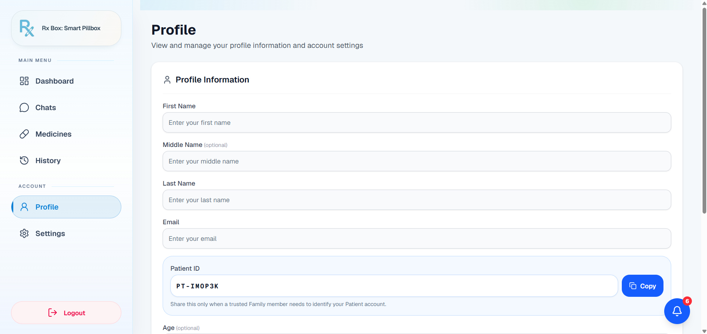
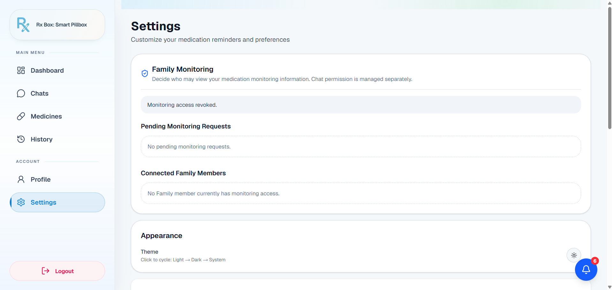
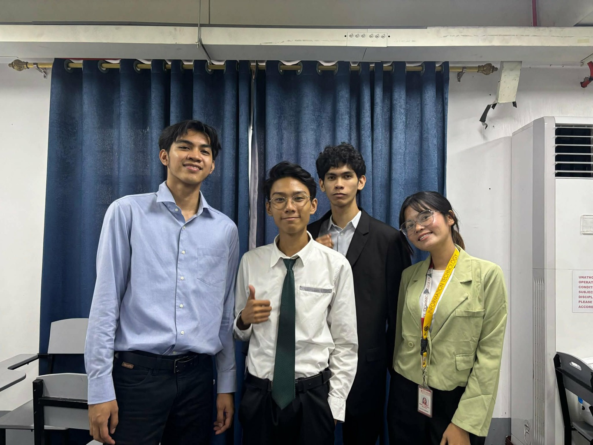

01
IOT / CAPSTONE · IN PROGRESS
Rx Box: AI-Driven Smart Pillbox.
Connected reminders.
Informed support.
An IoT capstone that connects a smart pillbox with a web application to support medication routines for people with hypertension and diabetes. It brings together medication scheduling, reminders, adherence records, predictive behavior analysis, and family monitoring. The supplied photographs show the prototype and team; screenshots document the application interface.
- OBJECTIVES
- Support scheduled medication routines; connect the pillbox and application; record medication activity; help patients and authorized family members review adherence information.
- MY ROLE / CONTRIBUTION
- Full-Stack Developer. My contribution covers web interface and backend development, connecting application features with medication information and monitoring workflows.
- APPLICATION TECHNOLOGIES
- Next.js · Node.js · TypeScript · MongoDB Atlas
- HARDWARE
- ESP32 · Servo-driven pillbox · Ultrasonic pickup sensor · Buzzer · LED · Wi-Fi
- TEAM
- John Carl E. Layosa · Asher Daniel M. Tibayan · Vincent Ace C. Fronteras · Kristine Mae B. Montajas
- STATUS / OUTPUT
- In progress. A physical prototype, web application, team photographs, and interface screenshots are documented. Clinical effectiveness is not established by this portfolio evidence.
- DETECTION LIMIT
- Sensor activity indicates pickup or access, not confirmed swallowing.

View evidence ↗Explore all supporting images +

View evidence ↗
View evidence ↗
View evidence ↗
View evidence ↗
View evidence ↗
View evidence ↗
View evidence ↗
View evidence ↗